Gepflegte
Wildnis
Gepflegte
Wildnis
Willkommen
auf meiner Website über die Biotope unserer Straße in Leipzig!Ich möchte hier meine Pläne und Ziele für die Biotope wie auch die von mir beobachteten Arten für Sie jederzeit und aktuell verfügbar machen.
Tipps zum Umgang mit der Website finden Sie in der Hilfe.
Letzte Bearbeitung der Website: 17.07.2026
Aktuelles
Auf der Gesamtartenliste der Pflanzen für 2025 unterschied ich zwischen insgesamt
207 Pflanzenarten.
Ebenfalls fertiggestellt ist die Artenliste der Pflanzen auf der Fläche 7. Dort habe
ich 2025 113 Pflanzenarten bestimmt. Auch das Diagramm und die Tabelle, welche Pflanze dort in welchem Monat
geblüht hat, ist hier zu finden.
Die Mahd-Pläne für 2026 stehen. Ebenfalls sind auf der Seite die Geschehnisse von 2025 zusammengefasst.
Im Fotoarchiv ist 2025 fertiggestellt. In der Tierartenliste sind Fotos durch einige Fundzahlen verlinkt. Dort in "Artenlisten & Statistik(en)" befindet sich die Fauna immer auf dem aktuellsten Stand.
Aktuell blühende Highlights: Tausendgüldenkraut, Rapunzel-&Wiesen-Glockenblume, Hain-Wachtelweizen, Hauhechel, Heide-&Kartäusernelke, Flockenblumen, Weißer Steinklee, Natternkopf, Labkräuter, Braunellen, Acker-Witwenblume, (Weg-Distel, Wiesen-Platterbse, Hornklee, Wiesen-Pippau, Vogel-Wicke, Zaun-Wicke, Wundklee)
Fotos von Mitte Juni 2026
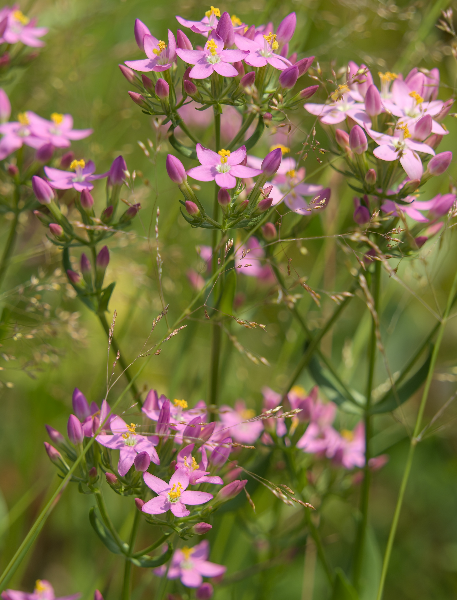
Tausendgüldenkraut
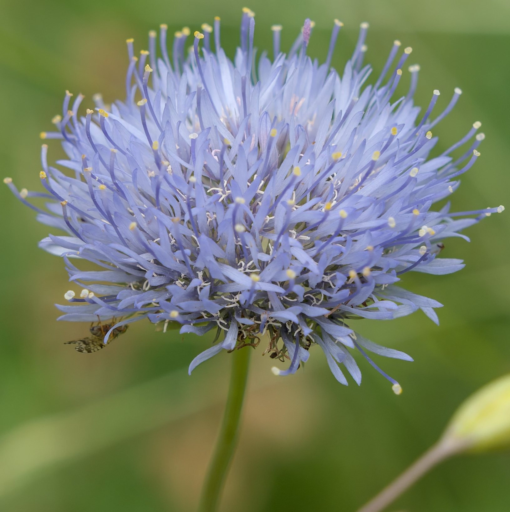
Berg-Jasione (auch -Sandglöckchen oder Schafskabiose)
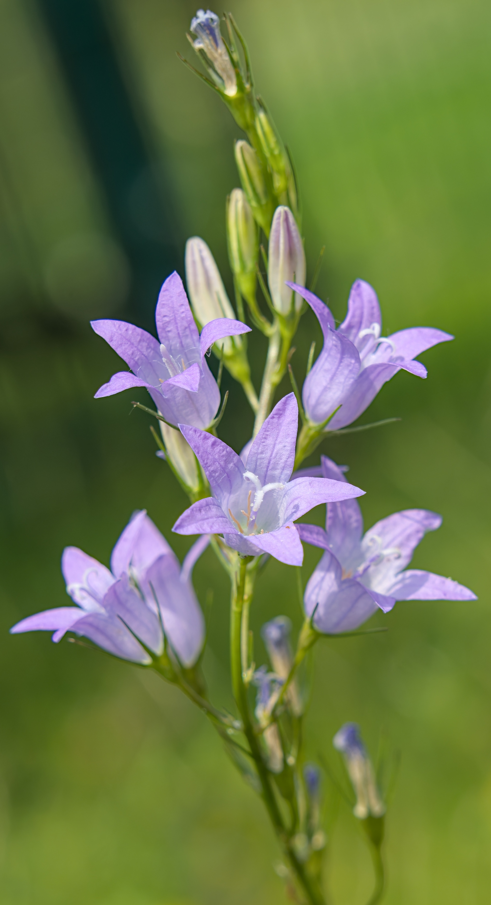
Rapunzel-Glockenblume
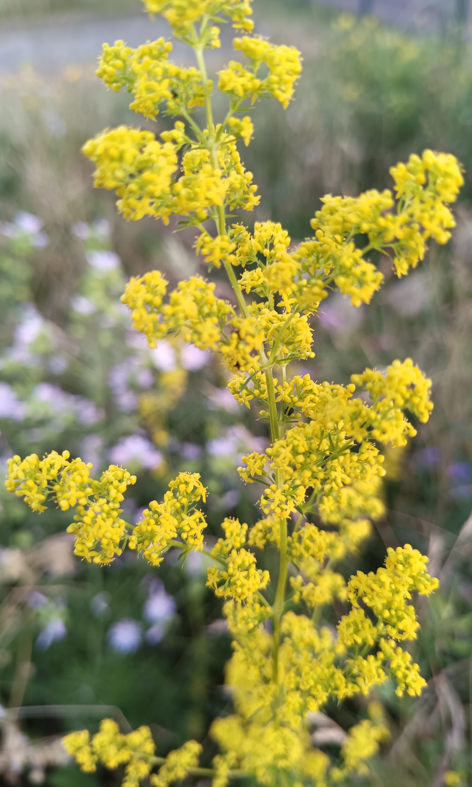
Echtes Labkraut
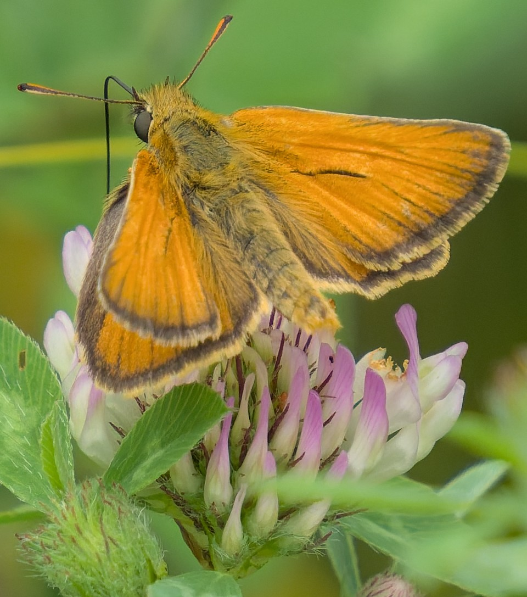
Braunkolbiger Braun-Dickkopffalter
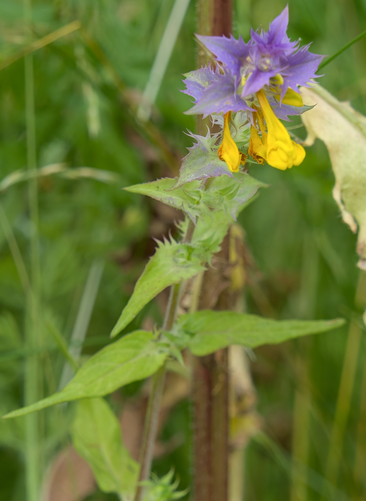
Hain-Wachtelweizen (Fl 6)
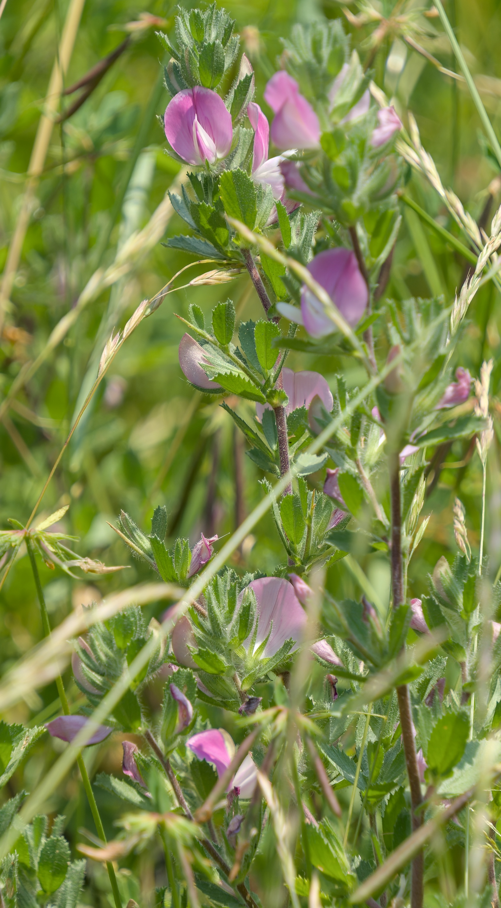
Hauhechel
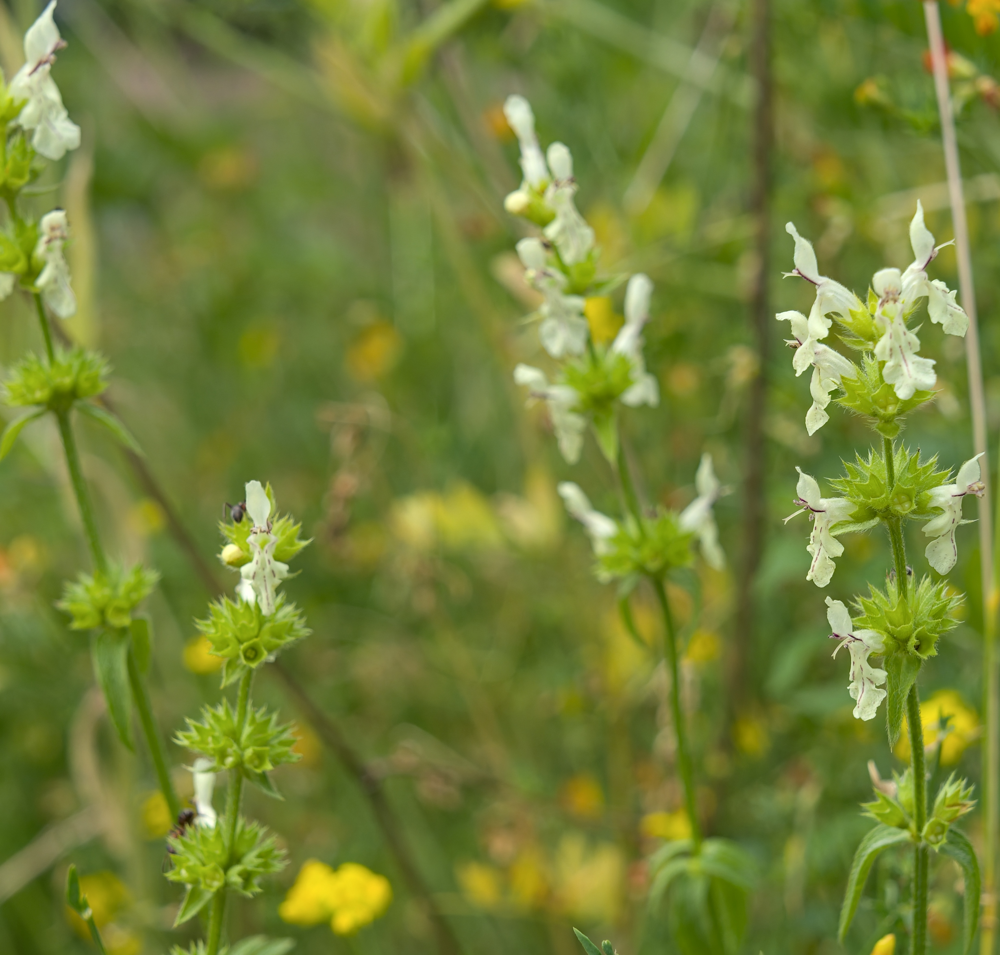
Aufrechter Ziest (Fl 7)
Fotos von Mitte Mai 2026
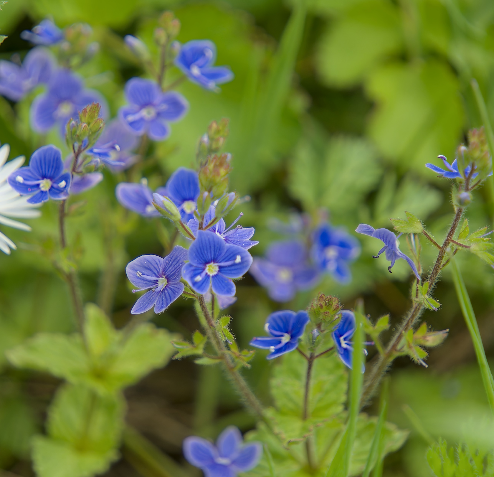
Gamander-Ehrenpreis
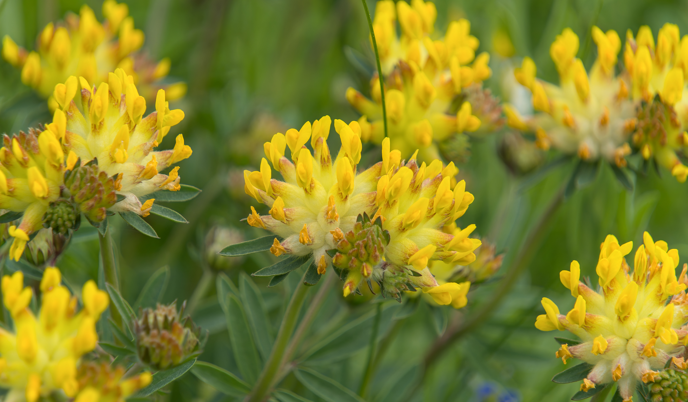
Wundklee
dieses Jahr nicht nur auf der Fl. 7, sondern auch auf 3 und 8
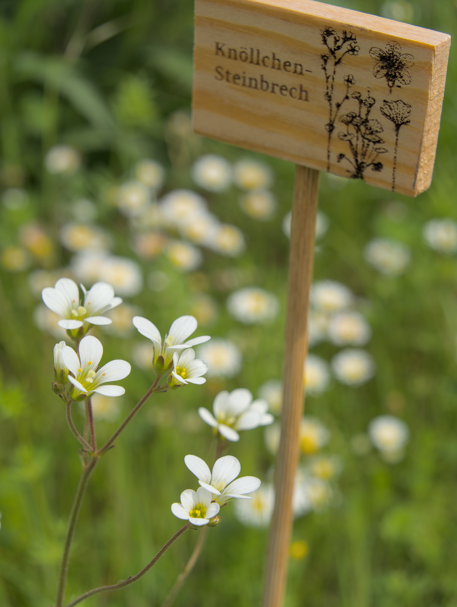
Beschrifteter Knöllchen-Steinbrech im Westen der Fläche 7
Fotos vom 28.04.2026

Kriechender Günsel


Schwere Sandbiene Andrena gravida und die als Brutparasit ausschließlich auf sie spezialisierte Rotbäuchige Wespenbiene Nomada bifasciata

Rapünzchen/Feldsalat, Art noch
anhand der Samen zu bestimmen